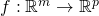
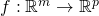
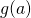
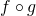
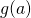
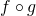

The goal of this post is to show the math of backpropagating a derivative for a fully-connected (FC) neural network layer consisting of matrix multiplication and bias addition. I have briefly mentioned this in an earlier post dedicated to Softmax, but here I want to give some more attention to FC layers specifically.
Here is a fully-connected layer for input vectors with N elements, producing output vectors with T elements:
As a formula, we can write:
Presumably, this layer is part of a network that ends up computing some loss L. We'll assume we already have the derivative of the loss w.r.t. the output of the layer .
We'll be interested in two other derivatives: and .
Jacobians and the chain rule
As a reminder from The Chain Rule of Calculus,
we're dealing with functions that map from n dimensions to m dimensions:
 . We'll consider the outputs of f
to be numbered from 1 to m as
. We'll consider the outputs of f
to be numbered from 1 to m as  . For each such
. For each such
 we can compute its partial derivative by any of the n inputs as:
we can compute its partial derivative by any of the n inputs as:
![\[D_j f_i(a)=\frac{\partial f_i}{\partial a_j}(a)\]](../../images/math/30881b5a92e45259714ba01c7a12fbf8f6c56109.png)
Where j goes from 1 to n and a is a vector with n components. If f is differentiable at a then the derivative of f at a is the Jacobian matrix:
![\[Df(a)=\begin{bmatrix} D_1 f_1(a) & \cdots & D_n f_1(a) \\ \vdots & & \vdots \\ D_1 f_m(a) & \cdots & D_n f_m(a) \\ \end{bmatrix}\]](../../images/math/ab09367d48e9ef4d8bc2314a60313dec700193af.png)
The multivariate chain rule states: given  and  and a point
and  and a point  ,
if g is differentiable at a and f is differentiable at  then
the composition  is differentiable at a and its derivative
is:
,
if g is differentiable at a and f is differentiable at  then
the composition  is differentiable at a and its derivative
is:
![\[D(f \circ g)(a)=Df(g(a)) \cdot Dg(a)\]](../../images/math/00bdefa904bd34df2dfb50cc385e6497c4e5096e.png)
Which is the matrix multiplication of  and
and  .
.
Back to the fully-connected layer
Circling back to our fully-connected layer, we have the loss - a scalar function . We also have the function . If we're interested in the derivative w.r.t the weights, what are the dimensions of this function? Our "variable part" is then W, which has NT elements overall, and the output has T elements, so [1].
The chain rule tells us how to compute the derivative of L w.r.t. W:
Since we're backpropagating, we already know ; because of the dimensionality of the L function, the dimensions of are [1,T] (one row, T columns). has NT inputs and T outputs, so the dimensions of are [T,NT]. Overall, the dimensions of are then [1,NT]. This makes sense if you think about it, because as a function of W, the loss has NT inputs and a single scalar output.
What remains is to compute , the Jacobian of y w.r.t. W. As mentioned above, it has T rows - one for each output element of y, and NT columns - one for each element in the weight matrix W. Computing such a large Jacobian may seem daunting, but we'll soon see that it's very easy to generalize from a simple example. Let's start with :
What's the derivative of this result element w.r.t. each element in W? When the element is in row 1, the derivative is (j being the column of W); when the element is in any other row, the derivative is 0.
Similarly for , we'll have non-zero derivatives only for the second row of W (with the same result of being the derivative for the j-th column), and so on.
Generalizing from the example, if we split the index of W to i and j, we get:
This goes into row t, column in the Jacobian matrix. Overall, we get the following Jacobian matrix with shape [T,NT]:
Now we're ready to finally multiply the Jacobians together to complete the chain rule:
The left-hand side is this row vector:
And we're multiplying it by the matrix shown above. Each item in the result vector will be a dot product between and the corresponding column in the matrix . Since has a single non-zero element in each column, the result is fairly trivial. The first N entries are:
The next N entries are:
And so on, until the last (T-th) set of N entries is all x-es multiplied by .
To better see how to apply each derivative to a corresponding element in W, we can "re-roll" this result back into a matrix of shape [T,N]:
Computational cost and shortcut
While the derivation shown above is complete and mathematically correct, it can also be computationally intensive; in realistic scenarios, the full Jacobian matrix can be really large. For example, let's say our input is a (modestly sized) 128x128 image, so N=16,384. Let's also say that T=100. The weight matrix then has NT=1,638,400 elements; respectably big, but nothing out of the ordinary.
Now consider the size of the full Jacobian matrix: it's T by NT, or over 160 million elements. At 4 bytes per element that's more than half a GiB!
Moreover, to compute every backpropagation we'd be forced to multiply this full Jacobian matrix by a 100-dimensional vector, performing 160 million multiply-and-add operations for the dot products. That's a lot of compute.
But the final result is the size of W - 1.6 million elements. Do we really need 160 million computations to get to it? No, because the Jacobian is very sparse - most of it is zeros. And in fact, when we look at the found above - it's fairly straightforward to compute using a single multiplication per element.
Moreover, if we stare at the matrix a bit, we'll notice it has a familiar pattern: this is just the outer product between the vectors and x:
If we have to compute this backpropagation in Python/Numpy, we'll likely write code similar to:
# Assuming dy (gradient of loss w.r.t. y) and x are column vectors, by
# performing a dot product between dy (column) and x.T (row) we get the
# outer product.
dW = np.dot(dy, x.T)
Bias gradient
We've just seen how to compute weight gradients for a fully-connected layer. Computing the gradients for the bias vector is very similar, and a bit simpler.
This is the chain rule equation applied to the bias vector:
The shapes involved here are: is still [1,T], because the number of elements in y remains T. has T inputs (bias elements) and T outputs (y elements), so its shape is [T,T]. Therefore, the shape of the gradient is [1,T].
To see how we'd fill the Jacobian matrix , let's go back to the formula for y:
When derived by anything other than , this would be 0; when derived by the result is 1. The same applies to every other element of y:
In matrix form, this is just an identity matrix with dimensions [T,T]. Therefore:
For a given element of b, its gradient is just the corresponding element in .
Fully-connected layer for a batch of inputs
The derivation shown above applies to a FC layer with a single input vector x and a single output vector y. When we train models, we almost always try to do so in batches (or mini-batches) to better leverage the parallelism of modern hardware. So a more typical layer computation would be:
Where the shape of X is [N,B]; B is the batch size, typically a not-too-large power of 2, like 32. W and b still have the same shapes, so the shape of Y is [T,B]. Each column in X is a new input vector (for a total of B vectors in a batch); a corresponding column in Y is the output.
As before, given , our goal is to find and . While the end results are fairly simple and pretty much what you'd expect, I still want to go through the full Jacobian computation to show how to find the gradiends in a rigorous way.
Starting with the weigths, the chain rule is:
The dimensions are:
- : [1,TB] because Y has T outputs for each input vector in the batch.
- : [TB,TN] since has TB outputs and TN inputs overall.
- : [1,TN] same as in the batch-1 case, because the same weight matrix is used for all inputs in the batch.
Also, we'll use the notation to talk about the i-th element in the b-th input vector x (out of a total of B such input vectors).
With this in hand, let's see how the Jacobians look; starting with , it's the same as before except that we have to take the batch into account. Each batch element is independent of the others in loss computations, so we'll have:
As the Jacobian element; how do we arrange them in a 1-dimensional vector with shape [1,TB]? We'll just have to agree on a linearization here - same as we did with W before. We'll go for row-major again, so in 1-D the array Y would be:
And so on for T elements. Therefore, the Jacobian of L w.r.t Y is:
To find , let's first see how to compute Y. The i-th element of Y for batch b is:
Recall that the Jacobian now has shape [TB,TN]. Previously we had to unroll the [T,N] of the weight matrix into the rows. Now we'll also have to unrill the [T,B] of the output into the columns. As before, first all b-s for t=1, then all b-s for t=2, etc. If we carefully compute the derivative, we'll see that the Jacobian matrix has similar structure to the single-batch case, just with each line repeated B times for each of the batch elements:
Multiplying the two Jacobians together we get the full gradient of L w.r.t. each element in the weight matrix. Where previously (in the non-batch case) we had:
Now, instead, we'll have:
Which makes total sense, since it's simply taking the loss gradient computed from each batch separately and adds them up. This aligns with our intuition of how gradient for a whole batch is computed - compute the gradient for each batch element separately and add up all the gradients [2].
As before, there's a clever way to express the final gradient using matrix operations. Note the sum across all batch elements when computing . We can express this as the matrix multiplication:
This is a good place to recall the computation cost again. Previously we've seen that for a single-input case, the Jacobian can be extremely large ([T,NT] having about 160 million elements). In the batch case, the Jacobian would be even larger since its shape is [TB,NT]; with a reasonable batch of 32, it's something like 5-billion elements strong. It's good that we don't actually have to hold the full Jacobian in memory and have a shortcut way of computing the gradient.
Bias gradient for a batch
For the bias, we have:
here has the shape [1,TB]; has the shape [TB,T]. Therefore, the shape of is [1,T], as before.
From the formula for computing Y:
We get, for any batch b:
So, whereas was an identity matrix in the no-batch case, here it looks like this:
With B identical rows at a time, for a total of TB rows. Since is the same as before, their matrix multiplication result has this in column j:
Which just means adding up the gradient effects from every batch element independently.
Addendum - gradient w.r.t. x
This post started by explaining that the parameters of a fully-connected layer we're usually looking to optimize are the weight matrix and bias. In most cases this is true; however, in some other cases we're actually interested in propagating a gradient through x - often when there are more layers before the fully-connected layer in question.
Let's find the derivative . The chain rule here is:
Dimensions: is [1, T] as before; has T outputs (elements of y) and N inputs (elements of x), so its dimensions are [T, N]. Therefore, the dimensions of are [1, N].
From:
We know that . Generalizing this, we get ; in other words, is just the weight matrix W. So is the dot product of with the i-th column of W.
Computationally, we can express this as follows:
dx = np.dot(dy.T, W).T
Again, recall that our vectors are column vectors. Therefore, to multiply dy from the left by W we have to transpose it to a row vector first. The result of this matrix multiplication is a [1, N] row-vector, so we transpose it again to get a column.
An alternative method to compute this would transpose W rather than dy and then swap the order:
dx = np.dot(W.T, dy)
These two methods produce exactly the same dx; it's important to be familiar with these tricks, because otherwise it may be confusing to see a transposed W when we expect the actual W from gradient computations.
| [1] | As explained in the softmax post, we linearize the 2D matrix W into a single vector with NT elements using some approach like row-major, where the N elements of the first row go first, then the N elements of the second row, and so on until we have NT elements for all the rows. This is a fully general approach as we can linearize any-dimensional arrays. To work with Jacobians, we're interested in K inputs, no matter where they came from - they could be a linearization of a 4D array. As long as we remember which element out of the K corresponds to which original element, we'll be fine. |
| [2] | In some cases you may hear about averaging the gradients across the batch. Averaging just means dividing the sum by B; it's a constant factor that can be consolidated into the learning rate. |